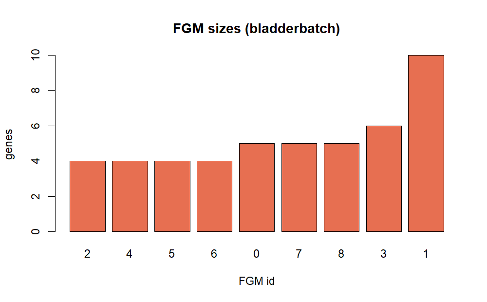

Tutorial: bladderbatch real-data analysis
Source:vignettes/tutorial-bladderbatch.Rmd
tutorial-bladderbatch.RmdBackground
The Bioconductor bladderbatch dataset contains
bladder-related expression profiles with sample labels for cancer status
(cancer) and study outcome group (outcome),
plus batch labels. It is suitable for evaluating whether NestedWGCNA
detects biologically and clinically structured modules in a
small-to-medium cohort.
Objective
The goal is to test whether CGM/FGM module scores are associated with
cancer and outcome labels in real bladder
data.
Data source and execution
This tutorial uses real data downloaded through Bioconductor package installation:
- Dataset:
bladderbatch::bladderEset - Samples: 57
- Features (probes): 22,283
Run:
system("Rscript inst/scripts/run_bladderbatch_case_study.R")Methods
Pipeline settings in this run:
- Select top 1,200 variable probes.
- CGM discovery with
min_cluster_size = 12. - Attempt GenFocus inside the target CGM; if INGS is not established, continue with direct FGM clustering.
- FGM discovery with requested
min_cluster_size = 6. - Module score association against
cancer,outcome, andbatch.
if (!is.null(summary_obj)) {
method_tbl <- data.frame(
item = c(
"samples",
"input probes",
"modeled probes",
"CGM modules",
"FGM modules",
"target CGM",
"GenFocus INGS"
),
value = c(
summary_obj$n_samples,
summary_obj$n_genes_input,
summary_obj$n_genes_model,
summary_obj$cgm_n_modules,
summary_obj$fgm_n_modules,
summary_obj$target_cgm,
summary_obj$genfocus_ings_n
)
)
knitr::kable(method_tbl, caption = "bladderbatch case-study summary")
}| item | value |
|---|---|
| samples | 57 |
| input probes | 22283 |
| modeled probes | 1200 |
| CGM modules | 59 |
| FGM modules | 9 |
| target CGM | 52 |
| GenFocus INGS | 0 |
Results
if (!is.null(summary_obj)) {
res_tbl <- data.frame(
layer = c("CGM", "FGM"),
modules = c(summary_obj$cgm_n_modules, summary_obj$fgm_n_modules),
assigned_genes = c(summary_obj$cgm_assigned_genes, summary_obj$fgm_assigned_genes),
noise_genes = c(summary_obj$cgm_noise_genes, summary_obj$fgm_noise_genes)
)
knitr::kable(res_tbl, caption = "Recovered module structure")
}| layer | modules | assigned_genes | noise_genes |
|---|---|---|---|
| CGM | 59 | 801 | 399 |
| FGM | 9 | 47 | 1153 |

CGM module size distribution
(bladderbatch)

FGM module size distribution
(bladderbatch)
if (!is.null(assoc) && nrow(assoc) > 0) {
top_assoc <- assoc[order(assoc$fdr), c("layer", "module", "phenotype", "test", "effect", "fdr")]
top_assoc <- head(top_assoc, 12)
knitr::kable(top_assoc, digits = 4, caption = "Top phenotype associations")
}| layer | module | phenotype | test | effect | fdr |
|---|---|---|---|---|---|
| CGM | CGM_58 | cancer | anova | 56.5939 | 0 |
| CGM | CGM_22 | outcome | anova | 27.7572 | 0 |
| CGM | CGM_24 | outcome | anova | 30.6785 | 0 |
| CGM | CGM_29 | outcome | anova | 31.8884 | 0 |
| CGM | CGM_30 | outcome | anova | 29.4378 | 0 |
| CGM | CGM_58 | outcome | anova | 29.7506 | 0 |
| CGM | CGM_31 | outcome | anova | 27.0696 | 0 |
| CGM | CGM_26 | outcome | anova | 25.9661 | 0 |
| CGM | CGM_24 | cancer | anova | 58.2505 | 0 |
| CGM | CGM_25 | outcome | anova | 24.1063 | 0 |
| CGM | CGM_56 | outcome | anova | 24.2582 | 0 |
| CGM | CGM_25 | cancer | anova | 44.0633 | 0 |
Main observation from this run:
- Multiple CGMs were strongly associated with
outcomeandcancer. - FGMs were recovered in the target CGM and provide additional substructure, but dominant phenotype effects remained at the CGM layer.